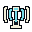
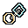
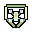

Support

Short field-radio pulse: upright transmitter and disconnected stepped side signals, with no scanning circle or attack shape.
FIELD KIT / TEAM FEEDBACK / PRODUCED CANDIDATES
Each badge uses a different silhouette. These supplement real game cues; numbers, progress, effect range and duration remain runtime-owned.

Short field-radio pulse: upright transmitter and disconnected stepped side signals, with no scanning circle or attack shape.
Braced hourglass with a narrow waist and descending sand: temporary slowdown, never a pause or stun command.

Round and diamond partner links joined by a pale diagonal coupling: held contact rescue, not a reward or extra reserve.

Small four-arm craft inside a tapered protective badge: revived-player grace, distinct from the hexagonal relay shield.
Original integer-pixel source, binary alpha and shared palette. This review page does not approve a runtime collection. Use the earned Team scenes in Asset Studio to inspect timing, placement and reduced effects.